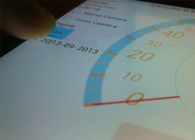
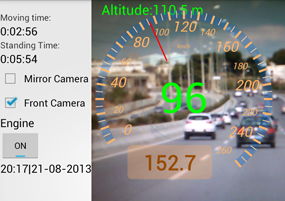
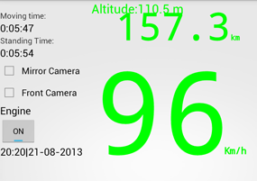
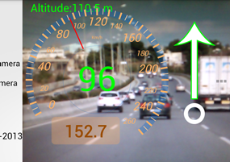
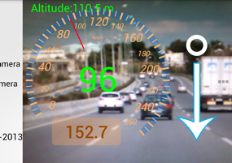
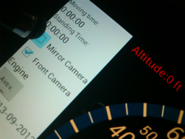
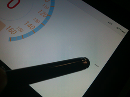
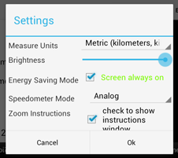

Open the engine
Begin calculations.
Calculates the distance and moving time of the vehile while the engine button is On.Analog Speedometer
Analog mode.
In Analog mode there are also a small digital indicator in the center. The orange rectangle shows the distance of your route. Above the Speedometer the indicator of he height above the sea, according the GPS (there might be diference to the real Height above the sea level). Speedometer can adjust for Imperial and Metric units.Digital Speedometer
Digital Mode.
In this mode is the same indicators with distinct light green color. Also incations adjust accoriding to the Imperial or Metric untis.Guide of Extra Mirror!
The current functionality via photos.
Zoom In
Touch from down to up.
Touch and move your finger from down to up, in the camera preview area for Zoom In. Some cameras does not support the zoom function, if this happen the application will inform you.Zoom Out
Touch from up to down.
Touch and move your finger from up to down, in the camera preview area for Zoom In..Change Camera
Check your camera.
Check the appropriate camera and the application will close the other and open your camera. If there is no box checked then a white backround will take place.Open the settings
Touch the three squares.
The button the picture shows, opens a bar with a settings and exit options. Touch it again and the menu will close.Settings Menu
Change Defaults.
In this menu you can change:- - distance units
- - brightness(brightness will return to the device deafult after the exit)
- - if you want the welcome screen to open every time
- - if you want the screen to remain open or not